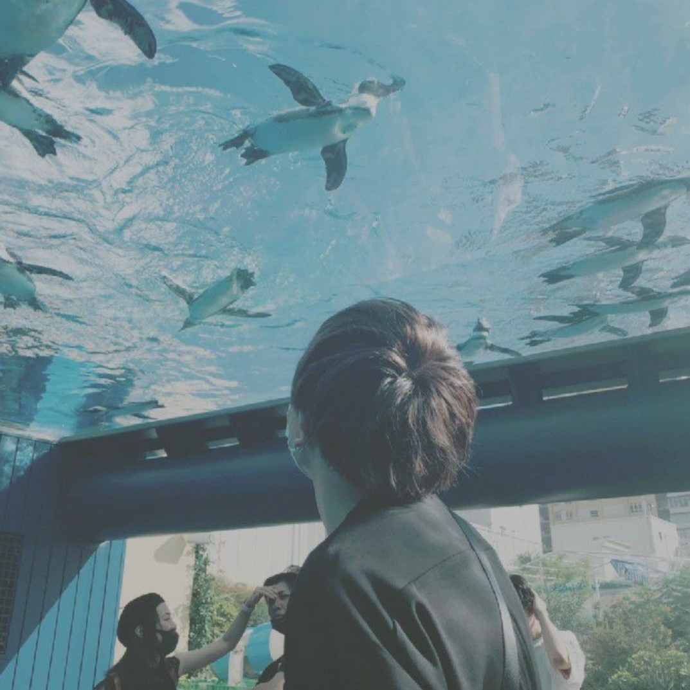

HiRoll

WEBデザイナーになろうとして日々勉強中のHiRollです！
最近活動を始めたばかりなので万々仕事を引き受けていこうと思っているので気になったら
ぜひご連絡お待ちしております！！気になることなどご連絡はDMでお待ちしております。
WEBデザイナーになろうとして日々勉強中のHiRollです！
最近活動を始めたばかりなので万々仕事を引き受けていこうと思っているので気になったら
ぜひご連絡お待ちしております！！気になることなどご連絡はDMでお待ちしております。